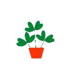
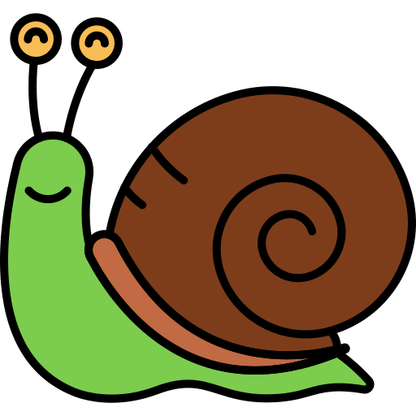
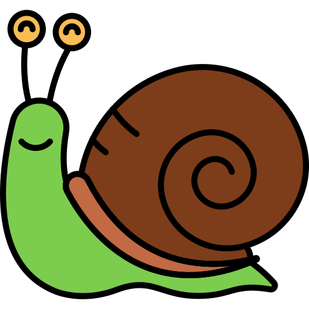

Get Gardening
A quick-start guide to deal with garden snails
What plants do snails like to eat?
Snails love to eat garden plants. Often they have their favourites.
In the chart below, you can see some of the plants eaten in just one night. Can you spot the ones they liked most?
Top tips to stop snails eating your plants
-

- Put egg shells around your plants.
- Try using eco-friendly slug pellets, which are child and pet safe.
- Encourage hedgehogs, frogs and toads into your garden!
- Plant herbs around your plants to mask the smell of the tasty leaves.
Let's play a game!
Watch out, there are snails in the garden and they want to eat your plants! Press SPACEBAR to jump (or click on mobile). See if you can get a Highscore!
 

0
Jumps:0